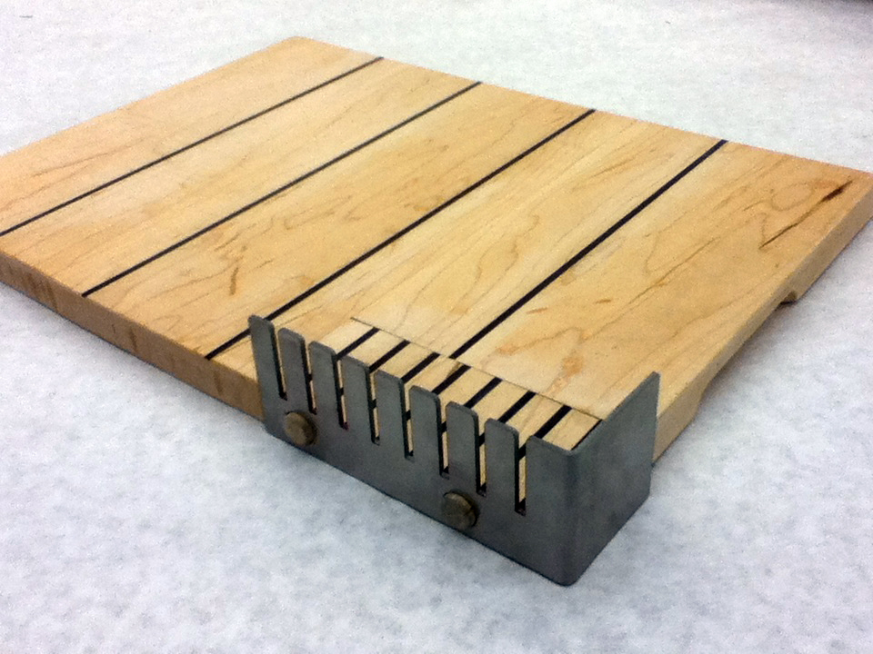

-

- 
-

-

Sickle Cell Disease Diagnostics
Sickle cell disease (SCD) is an inherited condition that causes production of abnormal hemoglobin. This leads to painful, and often fatal, complications, including swelling, anemia, and a weakened immune system. It is especially common in Sub-Saharan Africa, in the "malaria belt", due to sickled blood cells being a poor receptor for malaria. Approximately 200,000 children die every year from sickle cell disease before they reach the age of five, though lack of data makes it impossible to know the full effects of sickle cell disease. Working with local global health startup Daktari Diagnostics, our four-person team student pushed an early proof of concept out of a Harvard Whitesides lab towards an automated device for mass manufacture. By mixing blood samples with a specific multi-phase solution, we enable centrifuges to separate dense sickled cells from healthy blood cells. From there, we can evaluate the concentration of sickled cells to make a diagnosis.
Product Requirements
Results within 10 minutes
<$1.50 per test
Rechargeable battery
>95% sensitivity, >97% specificity (n=1500)
Technical Development
Starting with a bulky, expensive proof of concept using a high-resolution flatbed scanner, MATLAB code on a desktop computer, and centrifuge, the team integrated and miniaturized the system. The resulting all-in-one device uses image processing methods from openCV, built in Python and running on a Raspberry Pi 2B microcontroller. By augmenting a Pi Camera module with a wide angle phone lens, we were able to capture up to 12 blood samples and automatically diagnose positive and negative samples. We used methods from openCV to develop the image processing code in Python.
Interaction Design
Details to come.
Social Return on Investment (SROI)
Details to come.
Project Info
- Team Size: 4
- Partners: Daktari Diagnostics
- Fall 2015
- Project Posters